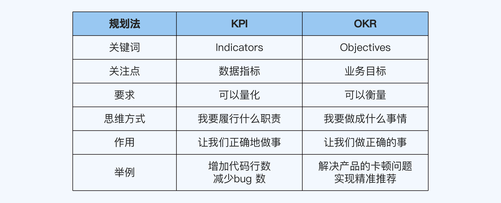
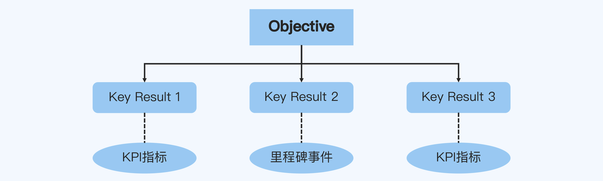
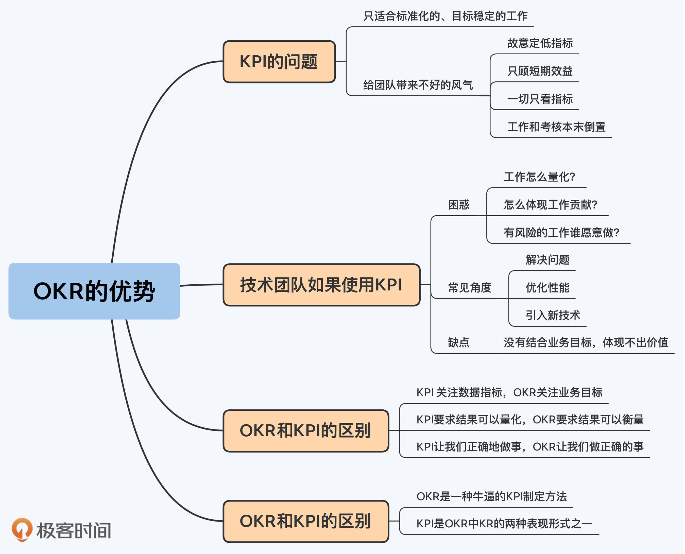

22 | OKR的优势：为什么要用OKR来取代KPI做团队规划？
你好，我是华仔。
如果让Team Leader（以下简称TL）选出自己工作中最头疼的几件事，那么团队规划一定是其中之一，因为这件事情很难有确定的标准，感觉怎么做都有一定的道理，但又不太确定什么样的规划才能拿到好结果。
那么是不是说，如果你不是TL，就不用掌握团队规划的方法了呢？其实并不是这样的。
首先，作为团队成员，你需要理解TL的规划，并且根据他的规划分解出自己的规划；当你自己学会了团队规划，就更容易发现潜在的机会，然后跟TL争取这些机会。
其次，现在到了P6+级别就可能带人了，如果你想晋升到P7的话，必须具备一定的管理能力，而无论你是带实体团队还是虚拟团队，都要掌握团队规划的方法。
KPI：关键绩效指标
团队规划到底要怎么做呢？大家耳熟能详的就是KPI了。
KPI的英文全称是Key Performance Indicator，意思是关键绩效指标。它把公司的目标自上而下地分解，并且通过相关的关键绩效指标来衡量实际的执行效果。
KPI的问题
虽然KPI规划法曾经的确是比较先进的管理方法，但是到了今天，它的缺点也暴露得很明显。
首先，它只适合标准化的、目标稳定的工作。
比如在一家生产洗衣液的工厂，生产线是标准化的流水线，KPI可以设定为产量、停机时间和良品率等，产品销售是目标稳定的活动，KPI可以设定为销售量和市场占有率等。
但是，工厂的技术创新就不适合用KPI来衡量了，因为创新有很大的不确定性，既不可能标准化，也不可能稳定产出。
其次，它也会给团队带来不好的风气。
索尼公司前常务董事天外伺朗就写过一篇名为《绩效主义毁了索尼》的文章，痛批KPI规划法带来的问题。这篇文章在业界流传很广，其激起的广泛讨论现在都没有停止。
如果我们先抛开文章结论对不对、观点是不是太偏激、索尼对KPI的理解是不是准确这些争议不谈，只看其中描述的现象，就会发现很多公司都存在同样的问题，比如：
- 故意定低指标：几乎所有人都把指标定得比较低，因为这样容易实现。
- 只顾短期效益：追求眼前利益的风气蔓延，短期内难见效益的工作都受到轻视，比如质量检验和老化处理等。
- 一切只看指标：上司不把部下当有感情的人来对待，一切都用指标来衡量。
- 工作和考核本末倒置：绩效考核需要把各种工作量化，但是很多工作无法简单地量化，所以公司在绩效考核上花费了大量的精力和时间，而在真正的工作上却敷衍了事，本末倒置。
KPI的困惑
KPI规划法的这些缺点，在互联网公司的技术团队往往会进一步放大，很多TL在使用这种方法的时候都遇到过问题，比如：
第一，程序员的工作要怎么量化？
代码行数？版本数？bug数？这些指标都是不可行的！
比如某通信大厂考核程序员的关键指标是bug的数量和等级，而考核测试员的关键指标是发现的bug数量和等级。
结果呢？程序员和测试员为了一个问题是bug还是需求遗漏、bug的等级是严重还是一般，能够吵上 2 个小时；2 个小时吵不出结果，就拉上双方主管再吵 2 小时；还吵不出结果，就拉上经理继续吵 2 个小时。
于是最后就看谁会吵，谁官大，搞得程序员和测试员身心俱疲，关系很紧张。
第二，技术团队怎么体现工作贡献呢？
既然代码量、版本数、需求数、bug数这些指标不可行，那么如何体现技术团队对业务的贡献呢？
有的公司喜欢用“技术团队背30%的业务指标”这样的方式来定技术团队的KPI。比如公司业务的整体目标是“新增用户100万”，技术团队直接按照30%的比例定自己的KPI为“新增用户30万”。
但实际上这种KPI没有什么意义，因为技术团队的工作并不能直观的转换为业务数据，最后只能是看运气，业务目标达到了技术团队就跟着吃肉，业务目标没达到技术团队就跟着挨罚。
第三，有风险的工作谁愿意做？
很多前瞻性和拓展性的工作也伴随着风险，比如引入 ElasticSearch，理论上是可以提升搜索性能的，但在引入的这一年可能会带来很多问题，之后能带来多少收益还不确定。
在KPI的机制下，这种有风险的工作很可能没有人愿意去做，因为大家都不想犯错。
技术团队规划的常见角度
考虑到这些问题，使用KPI规划法的时候，很多技术团队的TL会从以下3个角度来做团队规划：
1. 解决问题
比如解决版本延迟、线上Bug和团队成员士气不高等问题。
这是最容易找的角度，因为没有完美的团队，只要去找，一定能找到问题；而且这个角度看上去就很有价值，因为出问题肯定是不好的，解决掉总归是有好处的。
2. 优化性能
既包括团队优化，比如提升开发效率和质量，提升团队成员战斗力；也包括技术优化，比如将App的崩溃率从0.5%优化到0.3%，将后台接口响应时间从50ms优化到30ms。
这也是很多人喜欢用的一个角度，因为它也非常简单明确，不需要太多的思考，毕竟没有哪个产品和系统是完美的，每年都可以找到各种优化点，并且这些优化点还可以用指标衡量出来，看起来就是一个完美的KPI。
3. 引入新技术
比如引入Flutter来实现双端统一开发，引入机器学习来实现系统的某个功能。
业界各种新技术不断涌现，新技术有可能让生产效率或者生产质量大幅提升，所以引入新技术看起来既可以提升团队技术水平，又可以提升产品竞争力。
但是，从这些角度来做KPI规划，往往拿不到很好的绩效结果。主要原因在于，这些都是团队和技术的角度，没有结合业务目标，所以就算你做得很好，价值也不一定能体现出来。
我曾经多次遇到过这样的场景：
某个技术团队的TL兴致高昂地介绍了自己的团队规划。技术领导问了一句：“为什么要现在做这个事情，这个事情给业务带来什么价值？”
结果这位TL就答不上来了，因为在整个规划的过程中，他都没有这样思考过。最后，他的规划汇报没通过，被领导要求重新规划。
你可能会认为：这些事情本身都是有价值的呀，为什么不可以作为规划内容呢？比如App崩溃率从0.5%优化到0.3%，用户体验肯定是提升了的呀！
我不否认这个事情本身的价值，但是团队规划需要考虑的是如何做才能创造最大的价值。因为团队的资源和时间是有限的，需要让投入产出比最大化。
同样以App崩溃率为例，如果你的App是在东南亚市场推出，受当地市场的手机档次比较低端的限制，崩溃率0.5%跟国内市场比感觉很高了，但其实在当地已经算很好的了。
你花了很大力气，将崩溃率从0.5%提升到0.3%，确实有利于用户体验，但是这部分提升带来的价值对用户来说感知不明显。
相比之下，如果你花同样的资源按照当地用户的操作习惯将UI改版，可能效果会非常明显。
OKR：目标与关键成果
为了解决KPI规划法的问题，英特尔公司创始人安迪·格鲁夫（Andy Grove）提出了另一种团队规划法，后来由约翰·杜尔（John Doerr）引入谷歌发扬光大。
目前硅谷的知名企业都在使用这种方法，比如微软（Microsoft）、领英（LinkedIn）、推特（Twitter）、亚马逊（Amazon）、脸书（Facebook）和雅虎（Yahoo）等，它就是OKR规划法。
OKR的英文全称是Objectives and Key Results，意思是目标与关键成果。它的实施步骤是：
首先，设定业务目标（Objectives），比如提升市场占有率。
然后，为每个目标设定关键结果（Key Results），也就是为了实现目标具体要做的事情，以及具体的标准，比如为了实现“提升市场占有率”这个目标，准备“请XX明星做代言人”“投入100亿做用户补贴”等。
OKR 与 KPI 的区别是什么？
大部分人第一次接触 OKR 的时候都很疑惑：OKR和KPI看上去好像没什么区别，OKR的一个关键结果（KR）如果用数据来描述，似乎就是KPI的一项指标。
既然如此，那么我们为什么要强调用OKR，而不用KPI呢？其实它们的本质区别就藏在名字里。
KPI的关键词是Indicators，而OKR的关键词是Objectives。
换句话说，KPI 关注的是数据指标，而OKR关注的是业务目标。
我举几个例子来说明吧：
- 假如你是程序员，如果关注指标，你想到的是代码行数、bug 数和单元测试覆盖率；而如果关注目标，你想到的是解决产品的卡顿问题和实现精准推荐。
- 假如你是足球运动员，如果关注指标，你想到的是进球数、助攻数、跑动距离和比赛场次；而如果关注目标，你想到的是夺冠、四强和保级。
- 假如你是曹操专车的业务负责人，如果关注指标，你想到的是司机数量、订单数和乘客数；而如果关注目标，你想到的可能是让曹操专车成为网约车行业第二。
所以，不要小看指标和目标这两个词的力量，它们代表的是两种思维方式。
当你使用KPI规划法，更关注数据指标的时候，第一反应是“我要履行什么职责”，思维就会受到限制，只会关注当前已有的工作，不太可能去思考接下来应该做的事情是什么。
而当你使用OKR规划法，更关注业务目标的时候，第一反应是“我要做成什么事情”，思维就会更加开阔，而不会局限于当前正在做的事情，可以根据实际情况判断和选择接下来应该要做的事情。
方向对了，就不怕路途遥远；方向不对，数据再漂亮也没有意义。在快速发展的行业，比如互联网行业，我们需要拥抱变化、不断调整，显然OKR规划法更加适用。
《绩效主义毁了索尼》这篇文章里有这么一句话：“具有讽刺意味的是，因单枪三束彩色显像管电视机获得成功而沾沾自喜的索尼，却在液晶和等离子薄型电视机的开发方面落后了。”
怎么理解呢？按照 KPI 的思维，彩色显像管电视机是已经在做的产品，自然要把销量数据做得越高越好；但是按照 OKR 的思维，整个行业都在转向液晶和等离子电视，必须尽快切换产品方向。
彼得·德鲁克在《管理的实践》这本书中说道：“并不是有了工作才有目标，而是相反，有了目标才能确定每个人的工作。所以企业的使命和任务，必须转化为目标。”
这句话非常好地诠释了KPI和OKR的区别，提炼一下就是：KPI让我们正确地做事，OKR让我们做正确的事。

你知道大部分的人的KPI是怎么制定的吗？先看有哪几个指标，然后每个指标做一些提升，就当成KPI提交。
我就亲身经历过这样的KPI讨论场景：
某手游交易网站的产品经理列出了5个指标，用户量、成交额、用户安全、发货速度和收入，然后给每个指标设定了一个增长量。
团队内部讨论的时候，我提了一个问题：“为什么要制定这些KPI？”
产品经理的回答是：“这些指标每个都很重要啊，你说哪个不重要呢？”
事实上，这些指标在不同的时期重要程度是不一样的，有的指标甚至是互相冲突的。
- 如果业务目标是做到市场份额行业第一，那么用户量作为核心指标必须增长，你需要到百度买流量、补贴新用户和免交易手续费等，但这样做肯定会增加支出、减少收入。
- 如果集团要求创新业务必须实现盈亏平衡，那么收入作为核心目标必须增长，你就不能免除交易手续费，而是要实现交易阶梯收费，但这样又会影响用户量和成交额，因为会有一部分用户会因为手续费的原因而转移到其他交易平台。
当你用OKR规划法的话，需要先根据环境变化和业务发展进行判断和取舍，明确业务目标，然后才能基于目标分解出合理的KPI。
所以有一种说法是这样的：OKR其实就是一种牛逼的KPI制定方法。
OKR 与 KPI 的联系是什么？
虽然OKR和KPI有着本质区别，但这并不意味着它们截然相反、水火不容。
前面我也提到过，OKR的KR和KPI的表现形式基本一致。比如下面这个例子中的KR，我们说是它是KPI也没什么问题。
某App业务负责人的OKR
O：App注册用户数达到5000万
KR1：2021全年新增用户1500万
KR2：月活用户达到2500万
KR3：新用户月留存率达到40%
所以，OKR和KPI其实有着内在的联系，我觉得它们的关系用下面这张图来形象地表示：

如上图所示，OKR的KR有两种表现形式，一种是KPI，一种是里程碑。
因为KPI的要求是可以量化，而OKR的要求是可以衡量，有着微妙的不同。你可以用量化的数据来衡量，也可以用里程碑式的关键节点来衡量。
量化的KR很常见，比如前面提到的“2021全年新增用户1500万”。
里程碑式的KR，指的是关键事项的落地，难以量化但可以衡量。以索尼公司为例，彩色显像管电视的开发项目立项时的KR应该是“19XX 年开发出彩色显像管电视”，这就是一个无法量化但可以衡量的结果。
互联网行业常见的里程碑KR有“某某业务上线”“完成推荐系统从0到1开发”“落地敏捷开发流程”这些。
小结
现在，我们回顾一下这一讲的重点内容。
- KPI的缺点有两方面，一是只适合标准化的、目标稳定的工作，二是会给团队带来不好的风气，比如故意定低指标、只顾短期效益、一切只看指标、工作和考核本末倒置等。
- 技术团队的TL做团队规划有3个常见做法：解决问题、优化性能和引入新技术，但是因为没有结合业务目标，价值很难体现。
- OKR规划法关注业务目标，可以根据实际情况及时调整，更适合快速发展的行业。
- OKR是一种牛逼的KPI制定方法，KPI是KR的一种形式。当你先明确业务目标，再根据环境变化和业务发展进行取舍，才能制定出合理的KPI。

思考题
这就是今天的全部内容，留一道课后思考题给你吧。你完整地制定过团队或者自己的KPI吗，在这个过程中遇到了哪些疑惑和困难，学完这一讲你有解决的思路了吗？
欢迎你把答案写到留言区，和我一起讨论。相信经过深度思考的回答，也会让你对知识的理解更加深刻。